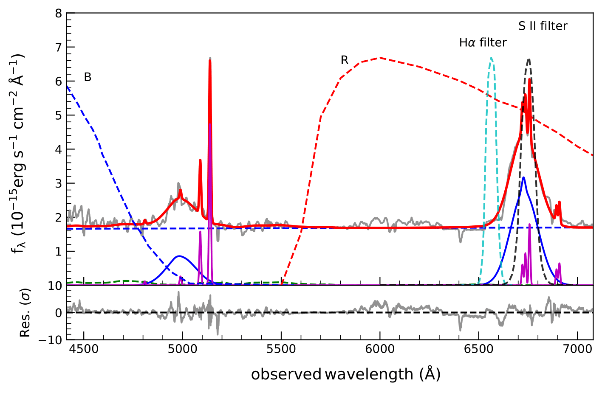
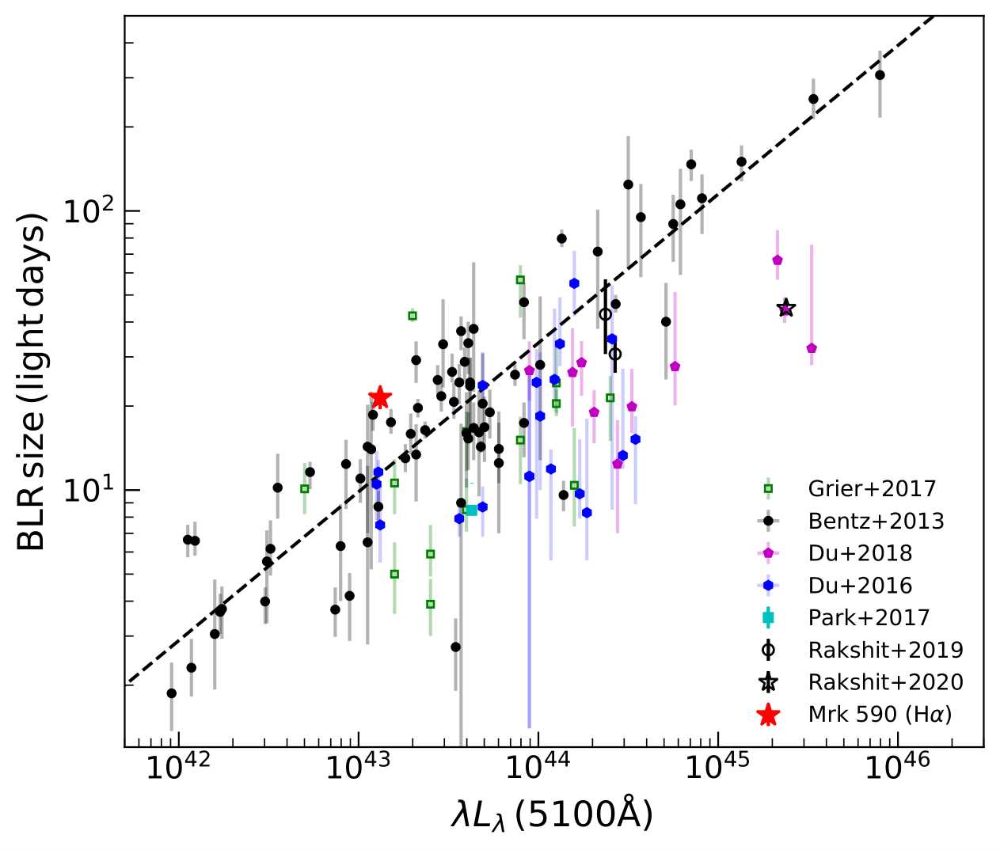

Mass of the Black Hole in the nearby AGN: Mrk 590
Most of the massive galaxies in the Universe host a supermassive black hole (SMBH) at their center. A minority among them are known as active galaxies and host active galactic nuclei (AGNs). These AGN are believed to be powered by the accretion of matter onto the SMBH and the emission from such accreting systems can have important effects on the host galaxy.
The central regions of such AGN are so compact to be spatially resolved by any current imaging techniques, with the exception of the broad-line region (BLR) being resolved in two nearby AGN using recent interferometric observations carried out on the Very Large Telescope of the European Southern Observatory. The angular size of the majority of the AGN is so small to be resolved using existing interferometric facilities. Therefore, alternative methods are needed to probe the central regions of AGN. One such technique is reverberation mapping, where time resolution is used as a proxy for spatial resolution. This technique allows one to determine the mass of the SMBH, the extent of the BLR, and the dusty torus that surrounds the SMBH. This technique works on the principle of measuring the time delay between the flux variations in an ionizing source and the flux variations from the surrounding regions irradiated by the central ionization source. Implementation of this method to find the extent of the BLR and subsequently measure the SMBH mass is usually carried out by spectroscopic monitoring observations which is not only a tedious process but also consumes an enormous amount of telescope time.

Figure 1: Subaru spectrum of Mrk 590. The broad B, R and narrow Hα and S II filters are also over-plotted. Image source : arXiv:2110.02055
An alternative to spectroscopic monitoring observations is the method of photometric reverberation which is simple and cheap in terms of observing time. This method relies on photometric monitoring observations of the AGN through suitably selected narrow-band filters to catch the redshifted emission line response, while another filter (either narrow band or broad band) is required to trace the continuum flux . A recent work titled: Changing look AGN Mrk 590: Broad-line region and black hole mass from photometric reverberation mapping led by Amit Kumar Mandal has used the technique of photometric reverberation mapping to find the extent of the BLR in a nearby AGN, Mrk 590, located at a redshift (z) =0.026, where the SII narrowband filter is able to monitor the Hα emission line. A few active galaxies are found to undergo a transition from Type 1 characterized by strong emission lines, to Type 1.8 or 1.9, with weak or no broad emission lines, or vice versa. These galaxies are known as changing look AGN. Mrk 590 is such a changing look AGN.

Figure 2: The BLR size- luminosity relation for Mrk 590 (red star) in this study. Also plotted is the same relation for all other objects whose BLR sizes are available through previous reverberation mapping campaigns. Image source : arXiv:2110.02055
From photometric observations carried out during July to December 2018, using a moderate size 60 cm robotic telescope located at the Cerro Tololo Inter-American Observatory, the research group was able to find the radius of the BLR of Mrk 590 to be 21.44+1.49-2.11 days. Using this lag, and an optical spectrum of the source obtained with the 8.2 m Subaru Telescope, the research led by Dr. Amit Kumar Mandal was able to measure the mass of the SMBH in Mrk 590 as 1.96+0.15-0.21 x 108 M ⦿, where M ⦿ is the mass of the Sun.
Original paper: Changing look AGN Mrk 590: broad-line region and black hole mass from photometric reverberation mapping
First Author: Amit Kumar Mandal
Co-authors: Malte Schramm, Suvendu Rakshit, C. S. Stalin, Bovornpratch Vijarnwannaluk, Wiphu Rujopakarn, Saran Poshyachinda, Vladimir V. Kouprianov, Joshua B. Haislip, Daniel E. Reichart, Ram Sagar, Blesson Mathew
First author’s Institution: Indian Institute of Astrophysics, Bengaluru, Karnataka, India – 560034;
Department of Physics, CHRIST (Deemed to be University), Hosur Road, Bengaluru, Karnataka India – 560029
Related articles
- Gravitational Waves in an Inhomogeneous Universe
- SARAS 3 telescope refutes astrophysical origins of the claimed cosmic dawn signal
- Shedding Light on the Cosmic Web with Fast Radio Bursts